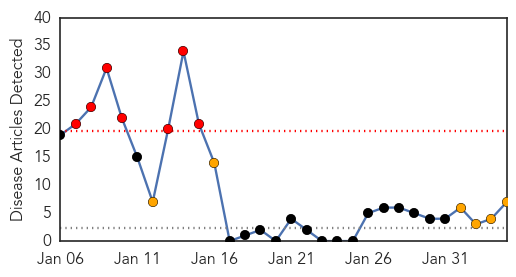
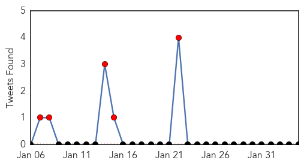
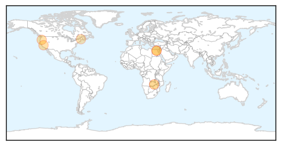
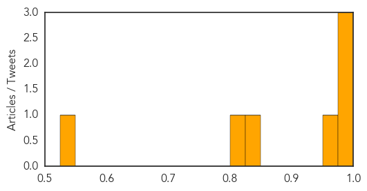

Toggle navigation
Early Warning
Daily Alerts
Swine Flu
Feb 04, 2014
Compare to:
-
Dengue Fever
Hemmorhagic Fever
Mold/Fungal Infection
Influenza
Meningitis
Pertussis / Whooping Cough
Middle East Respiratory Syndrome
Cholera
Hepatitis
Chikungunya
Yellow Fever
Bubonic Plague
West Nile Virus
Ebola
Measles
Unknown
Mumps
30 Day Trends
Web: 7
alerts
, 6
warnings
Twitter: 5
alerts
, 0
warnings
Top Articles:
0.996
Flu threat fading in Oregon, Southwest Wash.
0.994
Is The H1N1 Flu Bug: 'A Super Virus'? Why Are People Dying?
0.985
Swine flu kills 24 across Egypt
0.970
Swine flu kills 24 in Egypt over past 2 months
0.836
Flu outbreak temporarily closes Westbrook nursery school
0.806
Govt lifts ban on pigs movement
0.548
Government lifts ban on the movement of pigs and pork products in Southern Province
Top Tweets:
No tweets found for Feb 04, 2014
Web/News Articles

Tweets

Article Locations

Article Confidences
